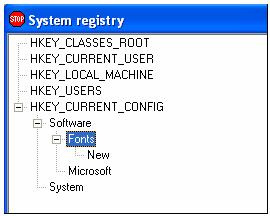

|
Системный реестр - база данных, которая сохраняет
параметры настройки для 32 разрядных версий Microsoft Windows включая; Windows 95, 98 и NT.
Он содержит информацию и параметры настройки для всех аппаратных средств, программ,
пользователей, и свойств PC. Каждый раз, когда пользователь делает изменения в параметрах
настройки Панели управления, или в ассоциациях файлов, системной настройке, или в установленном
программном обеспечении, изменения отражаются и сохраняются в системном реестре.
Редактор системного реестра (REGEDIT.EXE) включен в большинство версий Windows
(хотя Вы не найдете его в меню "Пуск") он дает возможность просматривать, искать и
редактировать данные в пределах системного реестра. Имеется несколько методов для запуска
редактора, самый простой - нажать на кнопку "Пуск", затем выбрать Выполнить, и в поле
'Открыть:' напечатать "regedit", и если редактор системного реестра установлен, он должен открыться.
Программа отображающая ключи реестра, позволяющая добавлять и изменять ключи,
добавлять и изменять значения, может быть представлена следующим образом (Рис 4.1).

Рис 4.1 Главное окно программы
Например, для просмотра подключей ветви «HKEY_CURRENT_CONFIG»,
необходимо щелкнуть левой кнопкой мыши по названию ветви «HKEY_CURRENT_CONFIG».
Если пользователю необходимо просмотреть подключи ключа «Software»,
необходимо щелкнуть левой кнопкой мыши по подключу «Software».
Для отображения значений подключа «Fonts» необходимо дважды щелкнуть левой
кнопкой мыши по подключу «Fonts» (Рис. 4.2).
Рис 4.2
Для добавления подключа к данному ключу необходимо
щелкнуть правой кнопкой мыши по ключу, к которому необходимо добавить подключ
(вследствие чего появится меню) и нажать пункт меню «Создать» - «Раздел».
Рядом с ключом, к которому добавили новый подключ, появляется знак «+» (плюс) (Рис. 4.3).
Рис 4.3
Для просмотра созданного подключа необходимо щелкнуть
левой кнопкой мыши по ключу (Рис. 4.4)

Рис 4.4
Нажав правой кнопкой мыши по подключу «New» (вызвав этим меню) можно переименовать
ключ или удалить его. Также можно для него добавить новое значение (Рис. 4.5).
Рис 4.5
Нажав правой кнопкой мыши по какому-нибудь значению, программа позволяет изменить
значение, переименовать его, либо совсем удалить (Рис. 4.6).
Рис 4.6
Основные функции системного реестра
| Функции |
Назначение |
| RegCloseKey |
Закрывает дескриптор данного открытого ключа. При этом освобождаются любые
связанные с данным ключом системные ресурсы. Закрытие ключа отнюдь не вызывает
задержку операций записи, происходящих непосредственно после выполнения данной
функции. |
| RegCreateKeyEx |
Создает или открывает подключ указанного ключа. |
| RegDeleteKey |
Удаляет подключ заданного ключа |
| RegDeleteValue |
Удаляет значение из подключа |
| RegEnumKeyEx |
Перечисляет подключи указанного открытого ключа системного реестра. |
| RegEnumValue |
Перечисляет значения указанного ключа, открытого в системном реестре |
| RegOpenKeyEx |
Открывает подключ системного реестра с требуемым типом доступа. |
| RegQueryInfoKey |
Возвращает информацию, которая описывает данный ключ системного реестра. |
| RegQueryValueEx |
Возвращает тип и данные для указанного имени значения, связанного с открытым
ключом системного реестра. |
| RegSetValueEx |
Устанавливает именованное значение любого подключа системного реестра |
|